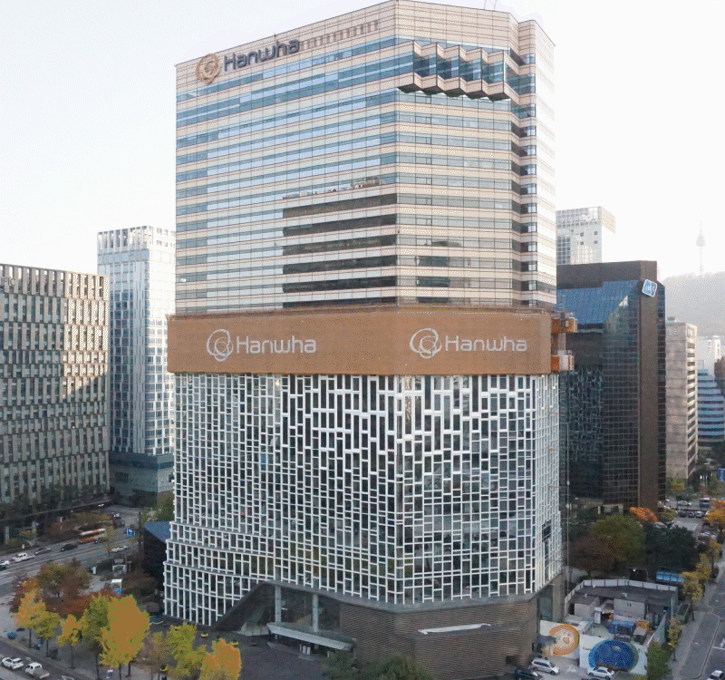
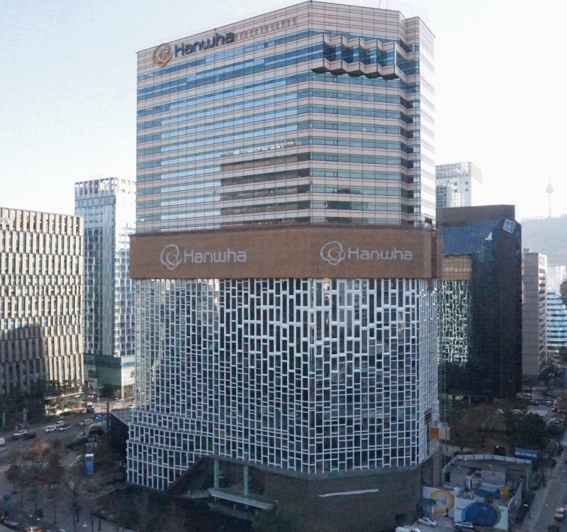
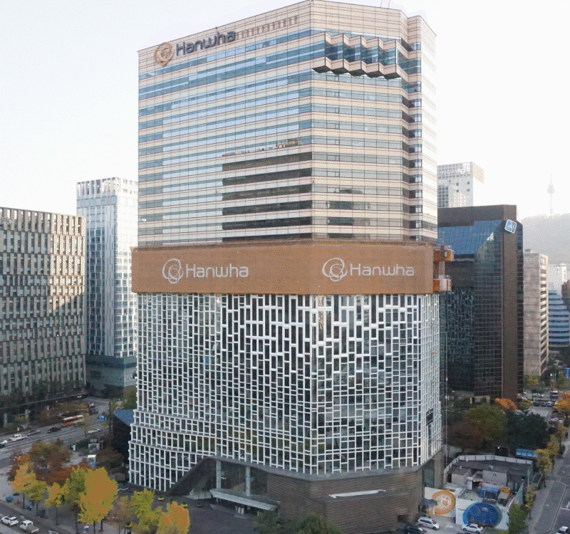
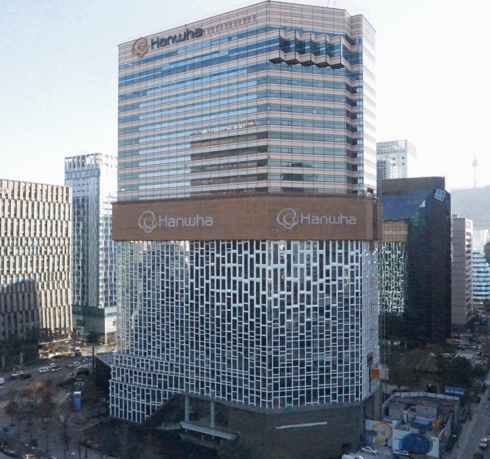
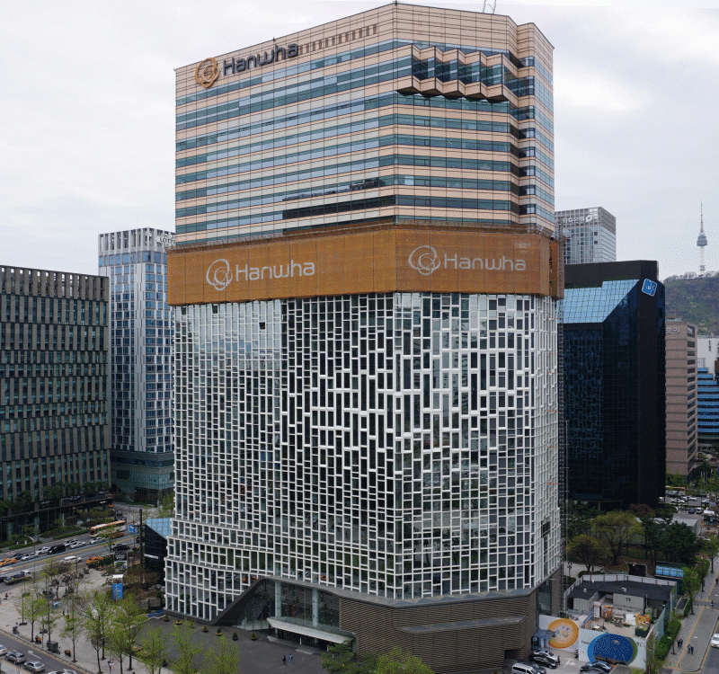
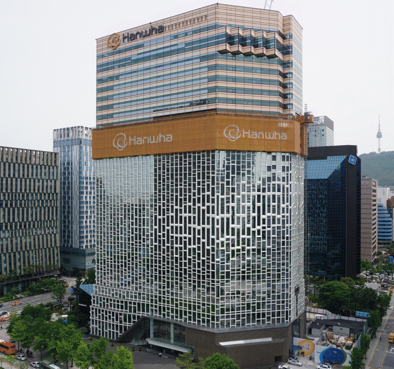
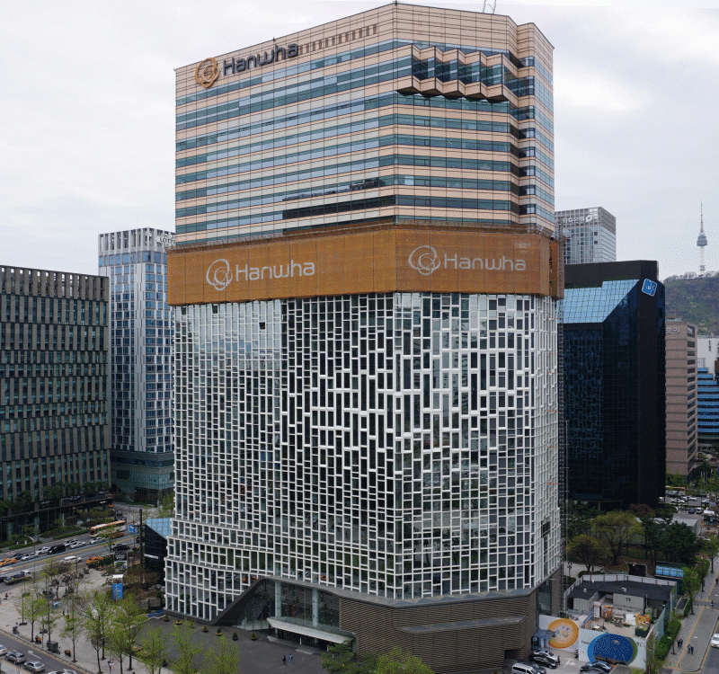
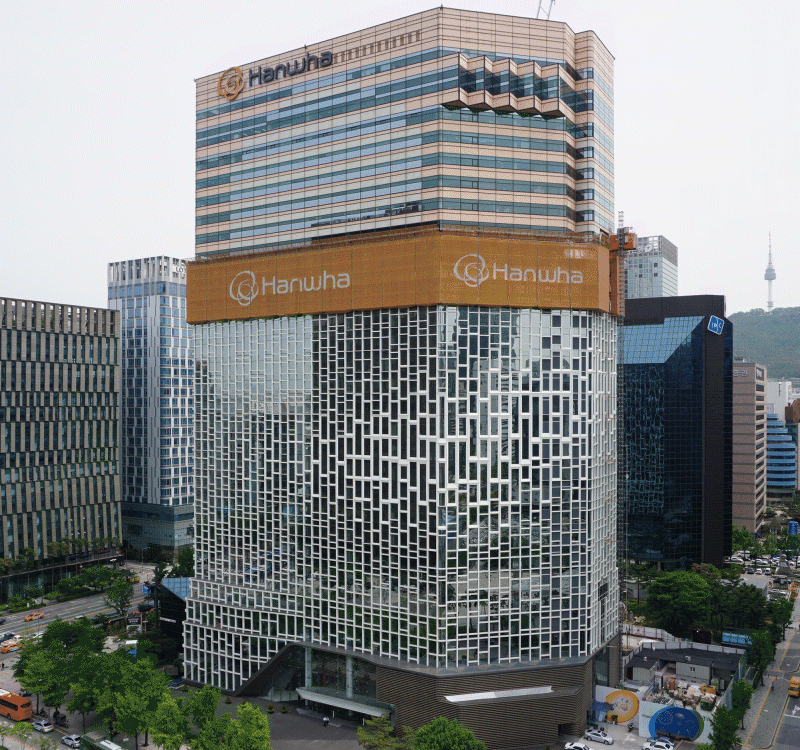

2022年可持续性领域的
五大趋势
2022年可持续性领域的
五大趋势
2022年刚刚过去3个月，还有很多未知数，但可以确定的是在可持续发展创新方面，2022年将成为具有里程碑意义的重要一年。
气候变化影响到我们每一个人，对可持续解决方案的需求从未像现在这样迫切。新的一年开始之后，让全世界共同思索为可持续解决方案可以做些什么。韩华秉承“为地球、为生命打造可持续解决方案”的使命，正在以多种方式发展可持续性，致力为世界各地打造更光明的未来。韩华秉承“为地球、为生命打造可持续解决方案”的使命，正在以多种方式发展可持续性，致力为世界各地打造更光明的未来。
新冠疫情席卷全球后，各国纷纷承诺通过更好、更绿色的重建来应对气候变化。那么在可持续发展方面，有哪些领域会成为2022年的焦点？本文将着重介绍今年最值得关注的可持续发展趋势，以期让读者得到上述问题的解答。
绿色能源价格将持续下降
最近，在可持续发展的话题上最值得关注的变化之一是，在过去几年里绿色能源逐渐得到普及。根据国际能源署(IEA)的数据，2020年全球可再生电力装机容量增加280吉瓦，2021年增加约270吉瓦，2022年有望再新增280吉瓦。
其中，影响力最大的领域就是太阳能。如果这一趋势持续下去，2022年全球光伏发电装机容量将达到太瓦(TW)级规模。专家们认为，一旦进入太瓦级， 全球光伏发电装机容量将在2030年达到10太瓦，到2050年约达30-70太瓦，足以满足全球大部分能源需求。
太阳能和风能等可再生能源已成为
最便宜的能源，推动了绿色能源的迅速普及。随着时间的推移，发电装机容量增加越多，可再生能源就会变得越便宜。国际能源署预测，到2022年，光伏(PV)发电装机容量将继续打破纪录，预计每年新增装机容量将超过160吉瓦。
图片资料
可再生能源成本下降，加上韩华对高质量的追求，韩华思路信Q CELLS部门的光伏组件可以在更多的住宅用和商业用建筑中得到使用。这也意味着为增加全球光伏发电容量，光伏板的开发和安装需要更多创新的方法。韩华集团在国内外积极开发相关技术，结果，Q CELLS的光伏板在韩国最大的漂浮式光伏发电站建设做出重要贡献。与此同时，韩华也向可再生能源技术方面的前沿技术企业进行果敢投资和赋能。
韩华不仅通过光伏发电解决全球变暖问题，还通过2021年收购RES法国等，稳步扩大风电领域的业务。收购RES法国将加快韩华向整体能源解决方案提供商的转型步伐，这也意味着韩华为解决气候变化问题，为更多的人提供清洁的绿色能源有效助力。
 从“净零”到“气候正效益”的转变
从“净零”到“气候正效益”的转变
许多人可能对“净零(Net Zero)”这个概念很熟悉。世界经济论坛(WEF)将其定义为一种情况，即人类活动造成的全球温室气体排放与减排达到平衡。《巴黎协定》的内容和意义也广为人知。该协定要求各国采取一致的行动，将全球平均气温升幅较工业化前水平控制在2摄氏度之内，从而遏制气候变化。
鉴于目前的努力还很不足，能否实现全球平均气温温升控制在2摄氏度之内的目标，2022年将成为关键一年。正如联合国环境规划署(UNEP)所警告，“新宣布或修订的气候承诺远远达不到《巴黎协定》的目标，如果没有改进行动，本世纪末全球气温至少上升2.7摄氏度。”
面对这些情况，作为解决碳排放问题的方法之一，各行各业需求接受并参与所谓的“气候正效益”活动。“气候正效益”活动不仅要求实现“净零”，还要求从大气中去除额外的二氧化碳(CO2)。韩华也通过支持各种“气候正效益”活动，积极应对气候变化。这些努力涵盖了广泛的领域，其中一些最具活力的例子涉及绿色能源技术，如建筑光伏一体化(BIPV)系统和依托光伏发电的造林项目。
作为涉及绿色建筑和可持续发展的关键设计因素，BIPV系统将光伏板作为建筑材料和动力电源。多年来，韩华一直为韩国的建筑（包括韩华总部大楼在内）提高建筑能源效率提供支持，将光伏组件作为建筑外部材料安装在建筑外壁。
和BIPV一样，“韩华太阳林”也是韩华致力于可持续发展的又一个成果。多年来，韩华通过韩华太阳林项目，在中国和韩国依托光伏发电营造山林，将植树造林作为应对全球变暖的有效手段。除此之外，韩华采用多种多样的方式，减少污染，应对气候变化，为人类与大自然共存予以强力支持。


 




 





最近，韩华对总部大楼进行了BIPV改造，将光伏组件安装在总部大楼外壁。
 更多国家将利用并挖掘绿氢的潜力
更多国家将利用并挖掘绿氢的潜力
2022年，我们可以期待更多的国家利用在宇宙中最丰富的物质——氢气的能量。
2019年，20国集团(G20)中只有法国、日本和韩国作为国家战略发展氢能技术。如今，17个国家的政府已经对外公开氢能战略，20个以上国家公开宣布正在树立氢能战略，更有无数企业正在寻求与氢能相关的新商务机会。在全球范围内，有超过90个项目计划涉及商用氢能。
此外，氢能发电市场规模将于2022年达到1547.4亿美元。随着越来越多的国家希望开发氢的惊人潜力，韩华一直通过各种努力，致力降低氢电解成本，开发阴离子交换膜水电解器(AEMWE)技术等，准备生产除氧气以外不伴随其他任何副产物的绿氢。2021年，韩华在国内企业中率先获得了加氢燃烧技术。加氢技术将液化天然气(LNG)和氢气同时燃烧发电，从而降低二氧化碳排放。此类技术的广泛应用有助于应对气候变化，让我们进一步贴近碳中和社会。
展望未来，韩华致力于以可承受的价格批量生产绿氢，而这些努力可为想要利用多功能能源的国家铺平道路。
图片资料
在包装和运输领域加强可持续性
最近一份对15000多人进行的调查报告显示，67%的消费者，尤其是年轻人，在购买产品时非常重视材料包装是否回收。
上述调查结果显示，尽管面临新冠疫情传播的挑战，但对于越来越担心塑料污染的消费者群体来说，可持续包装是优先考虑项。消费者正在寻求可减少环境影响的多种方式，各国政府也纷纷采取减少塑料垃圾的各种措施，这样的趋势在2022年也将持续。像韩华Compound的耐用聚乳酸（PLA）材料等先进技术，将使环保而可降解的塑料成为日常生活中不可或缺的一部分。
此外，在联合国气候变化大会第26次缔约方会议(COP26)上签署加速向零排放汽车转型的承诺后，预计在2022年更多的汽车制造商将积极参与更清洁的出行方式。韩华也深入参与面向可持续发展的变化，过去几年里一直对未来出行系统的关键零部件领域进行投资。
今年，韩华与合作伙伴将继续开发城市空中交通(UAM)所需的技术和基础设施。除了与总部位于加利福尼亚的先进未来空中交通(Advanced Air Mobility)制造商Overair合作以外，还为开发Vertiport（垂直起降机场）和Vertihub（垂直起降枢纽港）等UAM起降设施，与世界领先的UAM基础设施供应商Skyports联手合作。
*Overair正在成长为先进未来空中交通的全球引领者。总部设于加利福尼亚圣安娜的Overair旗下团队，依托几十年来在军用机领域积累的丰富创新经验，正在设计、制作和运营电动垂直升降机。为了在2025年获得FAA认证，Overair正在专注于通过同级空中交通工具中最强有力、高效、安静的航空器“蝴蝶”，使世界变得更近、更清洁。
图片资料
图片资料
 金融服务领域强化可持续性
金融服务领域强化可持续性
2021年金融界的一个关键话题是“道德金融”，预计在2022年这一话题将继续掀起波澜。这一概念涵盖三方面：绿色金融、社会金融和可持续性金融。为了通过金融活动实现可持续经营，韩华旗下6家金融子公司于2021年宣布了具有里程碑意义的承诺，即不参与、不承销煤电厂的债券，也不为煤电站提供融资。
另外，韩华投资证券一直在支持新一代金融网络——“Lightnet”,该网络旨在包容亚洲地区无法利用银行的人群。与此同时，韩华“DREAM PLUS”继续运营全球中心，为计划开拓海外市场的初创企业提供支持。继位于美国和日本的全球中心，DREAM PLUS正准备在中国、越南、印尼和新加坡等地开展服务，继续探索与各行各业合作的机会，助力初创企业成功创业。
相信，这些努力将在不远的将来，可使更多的人们享受更好的金融服务，并使社会成本和环境成本降低到最低水平。
图片资料
转折点
虽然我们无法了解明天将会发生什么事情，但可以肯定的是，对可持续性的需求从未如此之大。
针对上述五大趋势，韩华将通过各种举措和创新，应对气候变化的多种问题，努力提供有效而全方位解决方案，引领全世界走向更光明、更可持续的未来。
相关内容
最新故事
关联公司
-
 韩华思路信
韩华思路信是由韩华化学、韩华QCells和韩华高新材料等三家公司整合合并而成立的公司。
韩华思路信通过技术创新开发环保型产品。作为战略决策，将三家子公司合并而成立的韩华思路信，将在“创新技术，实现可持续发展”的口号之下， 使合并的三个部门之间发挥协同效应， 以确保公司长期的可持续发展。
韩华思路信
韩华思路信是由韩华化学、韩华QCells和韩华高新材料等三家公司整合合并而成立的公司。
韩华思路信通过技术创新开发环保型产品。作为战略决策，将三家子公司合并而成立的韩华思路信，将在“创新技术，实现可持续发展”的口号之下， 使合并的三个部门之间发挥协同效应， 以确保公司长期的可持续发展。
-
 韩华Systems
韩华Systems作为全球领先的综合 解决方案企业，在国防I C T 及信息基 础设施领域，推出标新立异的智能技 术。2018年8月，韩华Systems与韩华 S＆C合并成立法人，依凭尖端军工产业 IT及系统的整合力量，巩固了军工电子部 门的领先地位，将SI业务拓展至公共基 础设施及民间安保领域，加强了该领域 的竞争力。
韩华Systems
韩华Systems作为全球领先的综合 解决方案企业，在国防I C T 及信息基 础设施领域，推出标新立异的智能技 术。2018年8月，韩华Systems与韩华 S＆C合并成立法人，依凭尖端军工产业 IT及系统的整合力量，巩固了军工电子部 门的领先地位，将SI业务拓展至公共基 础设施及民间安保领域，加强了该领域 的竞争力。
-
 韩华投资证券
韩华投资证券成立于1962年，是一家综合资产管理公司，业务范围包括股票、债券、衍生商品等的经纪与承销业务、各种金融商品的销售及资产管理服务。凭借独一无二的系统及卓越的人力资源，本司推出了丰富的海内外金融商品和顾客导向型服务。正因如此，韩华投资证券逐步成长为赢得顾客信赖的资产管理伙伴。
韩华投资证券
韩华投资证券成立于1962年，是一家综合资产管理公司，业务范围包括股票、债券、衍生商品等的经纪与承销业务、各种金融商品的销售及资产管理服务。凭借独一无二的系统及卓越的人力资源，本司推出了丰富的海内外金融商品和顾客导向型服务。正因如此，韩华投资证券逐步成长为赢得顾客信赖的资产管理伙伴。